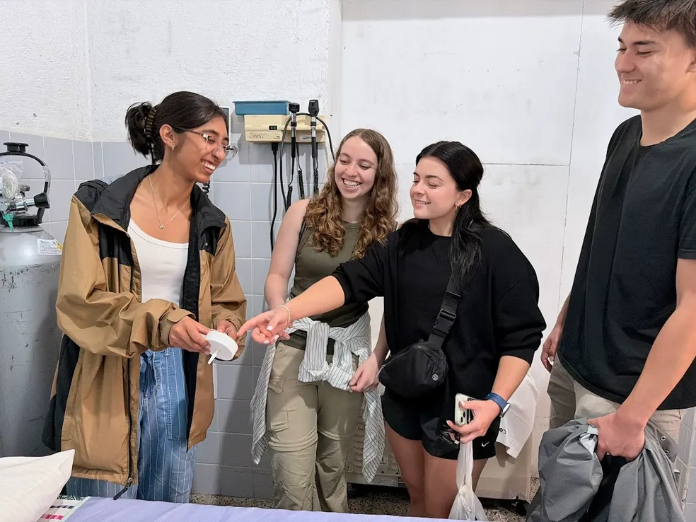

Featured

Senior Capstone Design
Ecofiltro — Reusable Medical Suction Filter
Designed a low-cost, reusable in-line suction filter for operating rooms in resource-limited hospitals in Guatemala. Validated across 30 sterilization cycles and improving suction safety by 50% — a device where no cost-effective reusable solution previously existed.

Published Research
Mastering the Manu: How Humans Create the Biggest Splash
A fluid dynamics study of the "Manu" — a Pacific island diving technique that creates enormous splashes. Published in the Journal of the Royal Society Interface and featured by Georgia Tech.